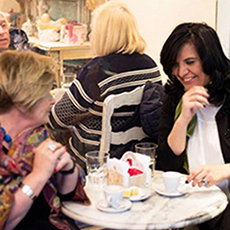

Clases, charlas y cursos

Educar y aprender

Desde 2010
¡Divertad, divertad, divertad!

Silvina Liliana Peirano (Buenos Aires, Argentina) es especialista en sexualidad y diversidad funcional. Desde 2010 administra el blog "Mitología de la sexualidad especial" y "Sex asistent, es fundadora del Centro Julia Pastrana (2015). Actualmente trabaja como docente de ESI en el Instituto superior del profesorado en educación especial (INSPEE)
Curso impartido en el colegio de Psicóloga de la provincia de Córdoba
Ver másInformación sobre el curso, ubicación del lugar y año
Ver másInformación sobre el curso, ubicación del lugar y año
Ver más